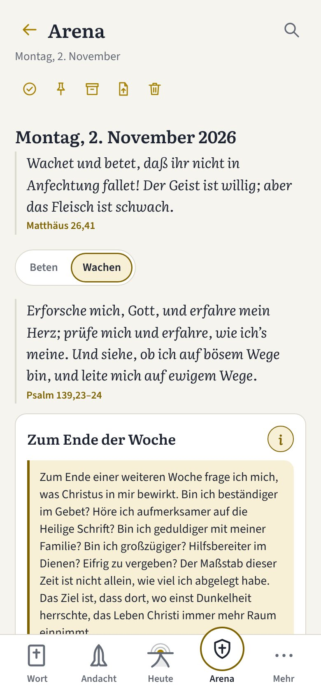
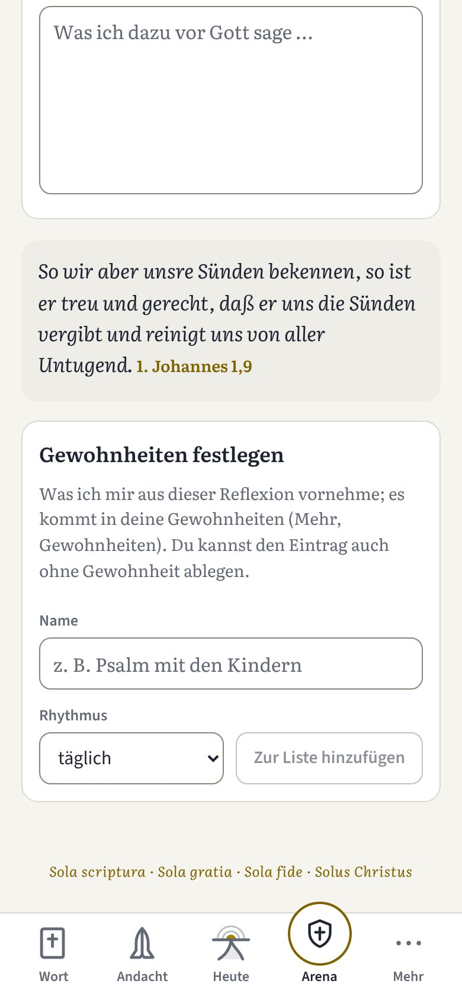
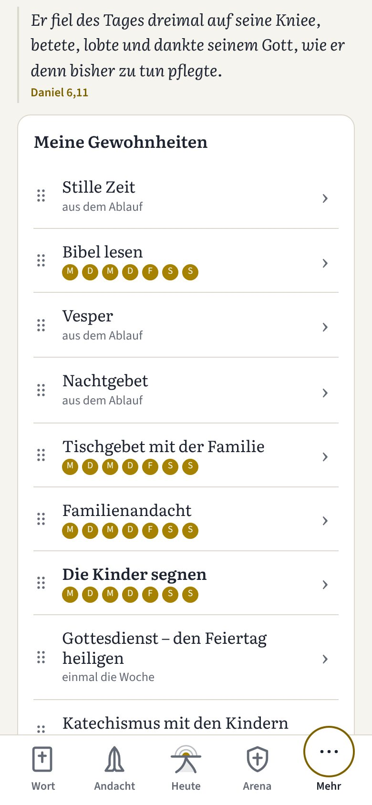
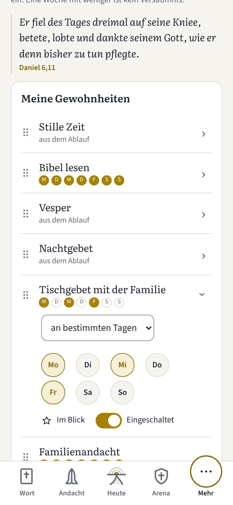
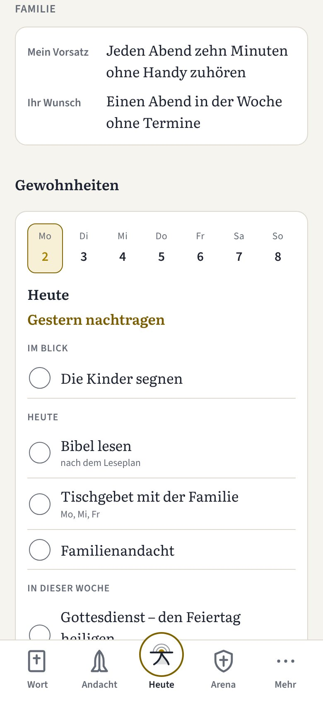
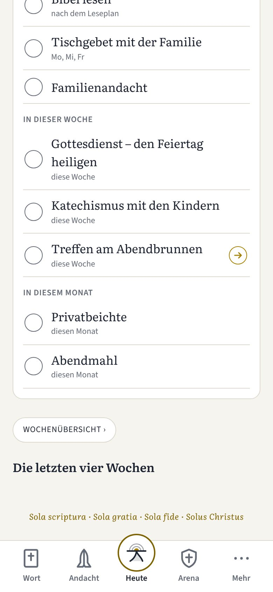

Neu in Henoch · November 2026
Wachen, halten, zu zweit
Drei Neuerungen in Henoch
Bruder, kennst du das? Eine Woche geht zu Ende, und du fragst dich, wo du stehst: im Gebet, im Wort, in deinem Haus. Oder du hast dir eine Gewohnheit vorgenommen, den Long Run am Samstag, und sie steht auch dienstags unter „Heute“ und mahnt dich. Und der Abend mit deiner Frau steht im Plan, aber du suchst erst den Weg dorthin.
Hier haben wir seit dem letzten Beitrag angesetzt: Du kannst die Woche vor Gott durchgehen, deine Gewohnheiten dort halten, wo sie hingehören, und kommst mit einem Tippen zum Abend zu zweit.
1. Wachen: die Reflexion in der Gebetskammer
Wenn du in der Gebetskammer einen neuen Eintrag beginnst, wählst du zuerst: Beten oder Wachen. „Beten“ ist der freie Eintrag, wie du ihn kennst. „Wachen“ ist neu: eine Reflexion, deine persönliche Rückschau auf die Woche.
Wachet und betet, daß ihr nicht in Anfechtung fallet! Der Geist ist willig; aber das Fleisch ist schwach.
Matthäus 26,41Die Reflexion beginnt mit dem Wort, wie jeder Ablauf in Henoch: Psalm 139,23–24. Danach stehen drei Fragen untereinander auf einer Seite. Den Text zu jeder Frage öffnest du hinter dem „i“ neben der Überschrift, beim ersten Mal ist die erste Frage schon offen.
- Zum Ende der Woche: Was bewirkt Christus in mir? Bin ich beständiger im Gebet, geduldiger mit meiner Familie, eifrig zu vergeben? Der Maßstab ist nicht allein, wie viel du abgelegt hast, sondern dass dort, wo einst Dunkelheit herrschte, das Leben Christi mehr Raum einnimmt.
- Bestandsaufnahme: Wie laufen die Lesungen, die Psalmen, das Fasten? Diese Disziplinen sind keine Auszeichnungen, sondern Hilfsmittel, deine Aufmerksamkeit auf Christus zu richten. Wer vom Weg abgekommen ist, korrigiert den Kurs und macht weiter.
- Wo hat der Feind an Boden gewonnen? Welche Sünde kehrt immer wieder? Du benennst die Sache, statt vage zu bleiben, und bringst sie im Gebet vor Gott.
Zu jeder Frage schreibst du mit der Tastatur oder mit dem Pencil. Der Eintrag wird beim Schreiben gesichert, wie jeder andere. Zuletzt legst du Gewohnheiten fest und übernimmst sie mit Zur Liste hinzufügen in deine Gewohnheiten. Beim Exportieren als Text oder PDF steht die Reflexion unter „Was dich bewegt“, mit den Fragen und den Gewohnheiten als Zwischenüberschriften.


Was dir das bringt
- Eine Woche im Licht des Wortes. Die Fragen helfen dir zu erkennen, wie der Heilige Geist verändert.
- Eine Ausnahme mit Zuspruch. Sonst gilt in Henoch: Sünde wird gebetet, nicht notiert. Nur in der Reflexion darfst du Sünde und Schwäche aufschreiben, und unter der Frage nach dem Boden des Feindes steht das Wort aus 1. Johannes 1,9. Deine Einträge bleiben auf deinem Gerät.
2. Gewohnheiten: wann sie dran sind
Eine Gewohnheit gehört nicht an jeden Tag. Darum wählst du bei jeder einzelnen unter Mehr → Gewohnheiten, wann sie dran ist: jeden Tag, an bestimmten Tagen (du tippst die Tage an, etwa den Long Run am Samstag), einmal bis sechsmal in der Woche oder einmal im Monat.
Die Liste selbst ist kurz geworden. Sie zeigt nur, was du hältst, mit dem Namen und darunter, wann es dran ist: bei täglichen Gewohnheiten als Woche in sieben Kreisen, sonst in Worten. Antippen öffnet, was du ändern kannst: wann sie dran ist, den Stern „Im Blick“, ausschalten und bei eigenen das Löschen. Zum Sortieren ziehst du am Griff. Alle Vorlagen und „Eigene anlegen“ findest du unter + Gewohnheit hinzufügen. Eine Zeile kannst du auch nach links wischen: Bei einer eigenen Gewohnheit erscheint „Löschen“, bei allen anderen „Ausschalten“.
Unter Heute stehen die Gewohnheiten jetzt in Gruppen: „Heute“ (oder der Tag, den du gewählt hast), „In dieser Woche“ und „In diesem Monat“. Was an bestimmten Tagen dran ist, steht nur an diesen Tagen da, mit dem Hinweis „am Samstag“. An den anderen Tagen ruht es.



Was dir das bringt
- Heute zeigt, was heute dran ist. Nichts mahnt dich an einem Tag, an dem es gar nicht dran ist. Ein ruhender Tag ist kein Versäumnis.
- Es bleibt, wie es war. Haken, die du schon gesetzt hast, bleiben. Wer etwas einmal verschiebt, trägt es in der Wochenübersicht am anderen Tag ein. Auch hier gibt es keine Serie, die reißt.
Ein jegliches hat seine Zeit, und alles Vornehmen unter dem Himmel hat seine Stunde.
Prediger 3,13. Zu zweit: der kurze Weg zum Abendbrunnen
Im letzten Beitrag haben wir das Treffen am Abendbrunnen vorgestellt, den festen Abend zu zweit für Verheiratete. Wer ihn eingeschaltet hat, sieht ihn unter Heute als Gewohnheit. Neu ist der Weg dorthin: Am Ende der Zeile führt ein goldener Pfeil in einem Ring direkt zum Treffen, wie der Ring zum Abhaken auf der anderen Seite. Die eigene Zeile „Zum Treffen am Abendbrunnen“ darunter entfällt.
Auch das Haus ist ruhiger geworden. Unter Mein Haus gibt es den Knopf „Erhört“ nicht mehr; bei deiner Frau und jedem Kind steht nur das Anliegen. Was du früher als erhört festgehalten hast, bleibt im Rückblick unter „Gebetserhörungen“.

Was dir das bringt
- Ein Tippen bis zum Gespräch. Du musst den Abend nicht suchen. Er steht da, wo du ohnehin hinsiehst, und der Ablauf nimmt dir das Suchen ab, damit ihr zuhören könnt.
- Das Anliegen steht für sich. Du bringst es vor Gott, ohne Knopf und ohne Haken.
Außerdem
- Unter Mehr → Über Henoch → Versionen stehen nur noch die zehn neuesten Versionen einzeln da; die früheren sind in Zehnergruppen zusammengefaltet.
Bruder, Gott ist gut, Seine Güte ist es, dass wir nicht gar aus sind; Seine Barmherzigkeit hat noch kein Ende, sondern sie ist alle Morgen neu, und Seine Treue ist groß (nach Klagelieder 3,22–23).
Soli Deo Gloria!
Das Wachen findest du in der Arena unter Gebetskammer, die Gewohnheiten unter Mehr, den Abendbrunnen unter Heute. Wie du Henoch auf dem Handy installierst, steht auf der Startseite; den ganzen Weg durch den Tag zeigt die Anleitung. Den vorigen Beitrag mit dem Treffen am Abendbrunnen findest du hier.
Bibeltexte nach der Lutherbibel 1912, Wort für Wort geprüft. Bilder aus der Vorschau von Henoch mit Beispieldaten. Stand: Henoch, Version 1.37.